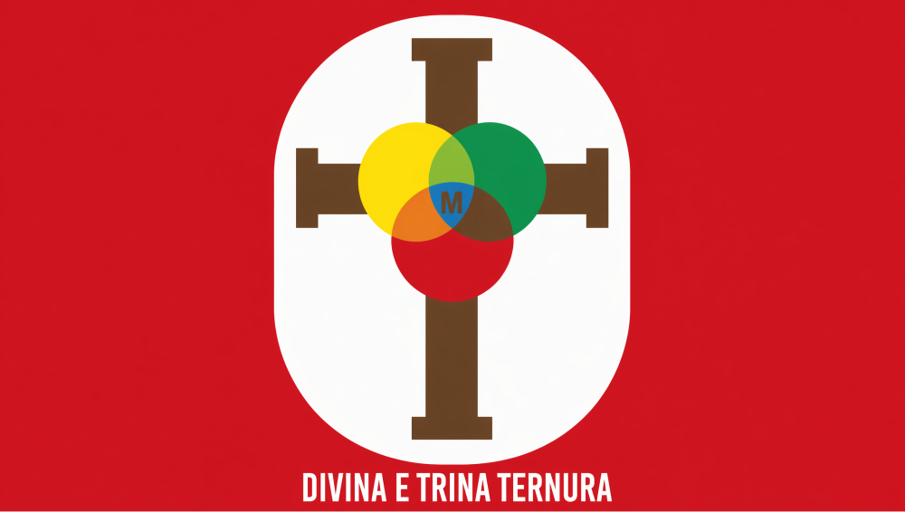
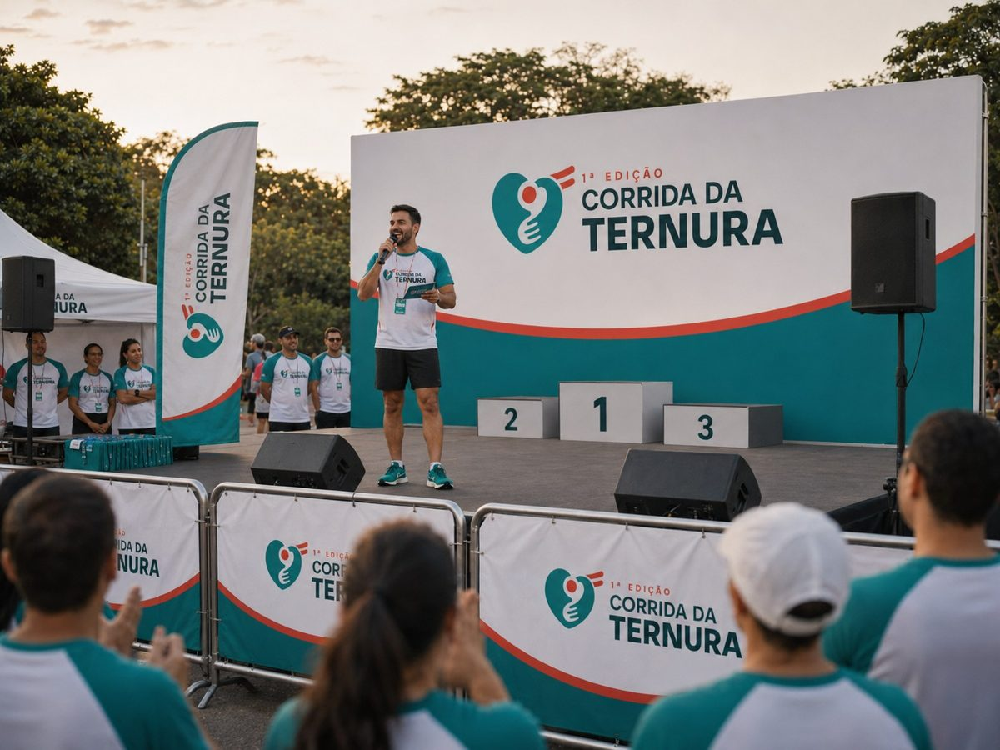
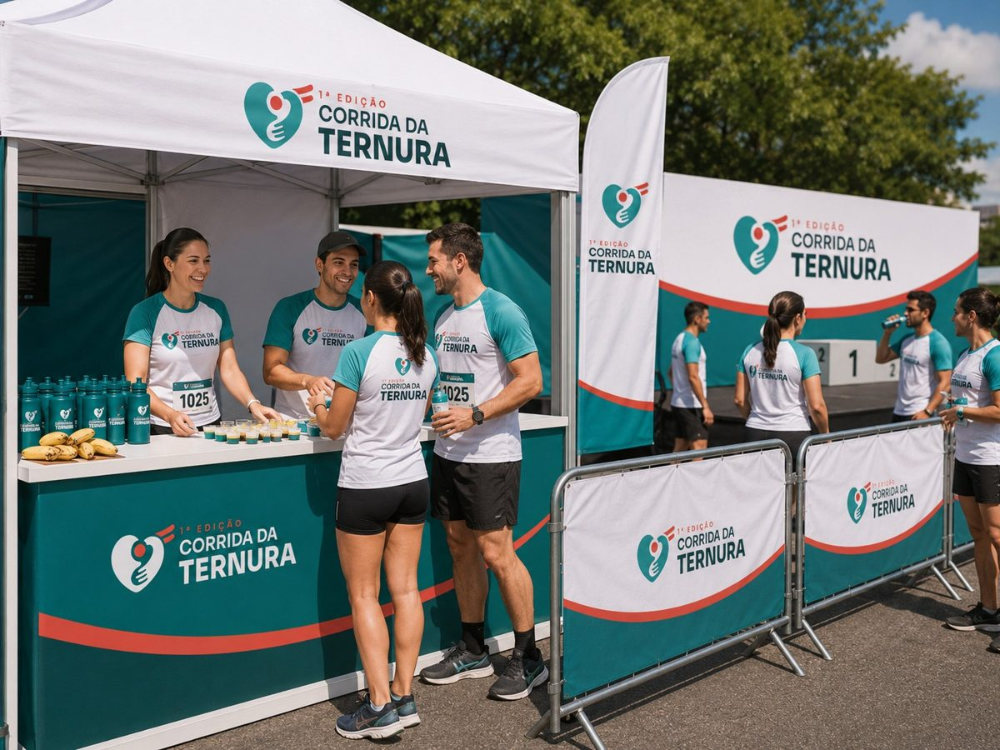
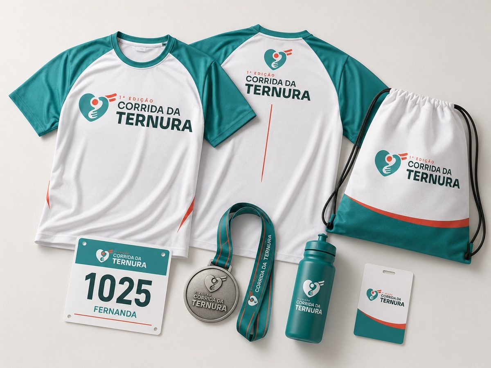

Atletas
500–600
Associe sua marca a um evento esportivo, familiar e comunitário com 500 a 600 atletas e forte presença regional em Guarapuava. Uma edição inaugural — com espaço para marcas fundadoras.
A Corrida da Ternura é um evento de corrida e caminhada realizado no Santuário da Divina e Trina Ternura, em Guarapuava/PR, com largada em 15 de novembro de 2026.
São quatro modalidades — 5km, 10km, caminhada e corrida kids — pensadas para reunir atletas, famílias e comunidade em uma única manhã. Um evento saudável e agregador, ideal para marcas que querem estar próximas do público e associadas a valores fortes.
*Considerando atletas e acompanhantes/famílias. Alcance digital (redes e site) consolidado ao longo da campanha.

RealizaçãoUm evento do Santuário da Divina e Trina Ternura, em Guarapuava/PR — credibilidade institucional e vínculo direto com a comunidade local.
Antes, durante e depois do evento — no corpo do atleta, na arena e nas telas.
Vestida por 500–600 atletas dentro e fora do evento.
Presente em praticamente todas as fotos de prova.
O ponto mais fotografado e filmado do evento.
Exposição ao longo do trajeto e na arena.
Brinde ou material inserido no kit de cada inscrito.
Posts, stories e presença na página oficial.
Citação da marca na largada e na premiação.
Estande, sampling, hidratação e ações com o público.
Investimento por cota sob consulta — os valores são definidos com a comissão a partir da estrutura de custos e das metas da 1ª edição.
A marca apresenta o evento: “1ª Corrida da Ternura — apresentada por [sua marca]”. Máxima exposição em todos os pontos, exclusividade de segmento e presença premium na arena.
Tabela de referência — os benefícios podem ser ajustados e combinados conforme o objetivo de cada marca.
| Benefício | Master | Ouro | Prata | Bronze | Apoio |
|---|---|---|---|---|---|
| Exclusividade de segmento | ✓ | ✓ | – | – | – |
| Naming rights (nome do evento) | ✓ | – | – | – | – |
| Logo na camiseta oficial | Destaque | Grande | Médio | Pequeno | – |
| Logo no número de peito | ✓ | ✓ | – | – | – |
| Marca no arco de largada/chegada | ✓ | ✓ | – | – | – |
| Banner no percurso / arena | ✓ | ✓ | ✓ | ✓ | – |
| Item / brinde no kit do atleta | ✓ | ✓ | ✓ | – | – |
| Post dedicado nas redes | ✓ | ✓ | Compart. | – | – |
| Logo no site e no media kit | ✓ | ✓ | ✓ | ✓ | ✓ |
| Citação na locução (palco) | ✓ | ✓ | ✓ | – | – |
| Estande / ativação na arena | Premium | ✓ | Opcional | – | – |
| Inscrições cortesia | 10 | 6 | 3 | 1 | – |






Imagens ilustrativas (mockups). Na etapa de fechamento, produzimos as aplicações com a marca de cada patrocinador.
As cotas são limitadas por segmento para garantir exclusividade. Fale com a comissão organizadora e reserve o espaço da sua marca na estreia da Corrida da Ternura.
📱 WhatsApp comercial · ✉️ [[EMAIL]]